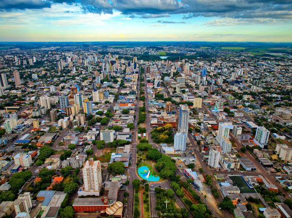

Sasha Hernandez
Sobre Mim
Olá! Meu nome é Sasha Hernandez. Moro em Cascavel, Paraná, Brasil. Sou estudante de Desenvolvimento de Software e gosto de aprender novas tecnologias.
Meus estudos: BYU–Pathway
Minha Cidade
Cascavel está localizada no estado do Paraná, na região Sul do Brasil. É uma cidade importante para o desenvolvimento da região, com atividades comerciais, agrícolas e industriais.
Saiba mais: Prefeitura de Cascavel Governo do Paraná
